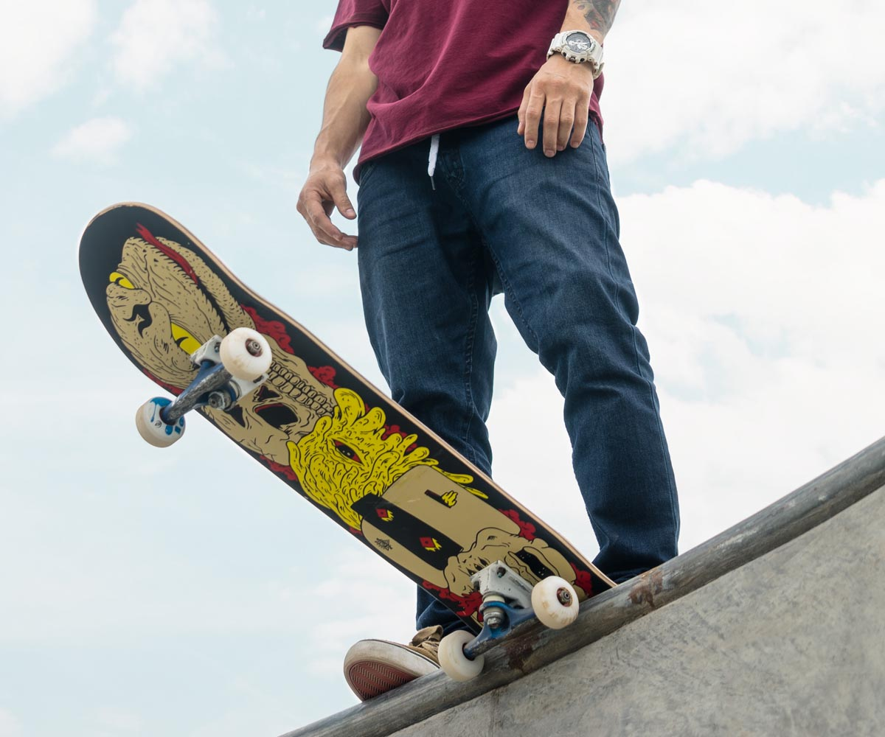

El sitio perfecto para iniciarte en el noble arte del patinaje callejero.
El poder de una tabla va mucho más allá de lo que nos imaginamos. El skate no solo implica huesos rotos y grindar barandillas. Está claro que la filosofía va mucho más allá de un sentimiento individual de expresión. El hecho de ser considerado un deporte sin un límite aparente, un modus vivendi basado en ir siempre más allá y seguir adelante, es un elemento que implica vivir experiencias distintas cada día. Ya sabéis, no hay límites y las normas las pones tú mismo, las variaciones son infinitas y sin colegas ni sentimiento de comunidad, lo demás no vale nada. Todos estos elementos contribuyen a crear, más que un deporte, un estilo de vida que une a comunidades enteras. Estímulos nuevos, contacto humano y objetivos renovados a diario. Es lo que hace funcionar el cerebro y mantenerlo activo. Y sobre todo, sentirse vivo y que te corre sangre por las venas. Pero también es importante que hay comunidades que encuentran una herramienta de integración social y de evasión para los más pequeños.
